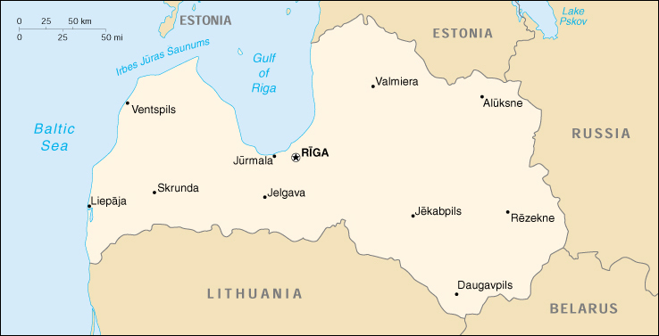

{kind=link}


| Latvia |
|
|  | |
| Introduction |
Background: After a brief period of independence between the two World Wars, Latvia was annexed by the USSR in 1940. It reestablished its independence in 1991 following the breakup of the Soviet Union. Although the last Russian troops left in 1994, the status of the Russian minority (some 30% of the population) remains of concern to Moscow. Latvia continues to revamp its economy for eventual integration into various Western European political and economic institutions.
| Geography |
Location: Eastern Europe, bordering the Baltic Sea, between Estonia and Lithuania
Geographic coordinates: 57 00 N, 25 00 E
Map references: Europe
Area:
total:
64,589 sq km
land:
64,589 sq km
water:
0 sq km
Area - comparative: slightly larger than West Virginia
Land boundaries:
total:
1,150 km
border countries:
Belarus 141 km, Estonia 339 km, Lithuania 453 km, Russia 217 km
Coastline: 531 km
Maritime claims:
continental shelf:
200-m depth or to the depth of exploitation
exclusive economic zone:
200 nm
territorial sea:
12 nm
Climate: maritime; wet, moderate winters
Terrain: low plain
Elevation extremes:
lowest point:
Baltic Sea 0 m
highest point:
Gaizinkalns 312 m
Natural resources: minimal; amber, peat, limestone, dolomite, hydropower, arable land
Land use:
arable land:
27%
permanent crops:
0%
permanent pastures:
13%
forests and woodland:
46%
other:
14% (1993 est.)
Irrigated land: 160 sq km (1993 est.)
Natural hazards: NA
Environment - current issues: air and water pollution because of a lack of waste conversion equipment; Gulf of Riga and Daugava River heavily polluted; contamination of soil and groundwater with chemicals and petroleum products at military bases
Environment - international agreements:
party to:
Air Pollution, Biodiversity, Climate Change, Endangered Species, Hazardous Wastes, Ozone Layer Protection, Ship Pollution, Wetlands
signed, but not ratified:
Air Pollution-Persistent Organic Pollutants, Climate Change-Kyoto Protocol
| People |
Population: 2,404,926 (July 2000 est.)
Age structure:
0-14 years:
17% (male 212,483; female 203,417)
15-64 years:
68% (male 777,289; female 849,967)
65 years and over:
15% (male 116,575; female 245,195) (2000 est.)
Population growth rate: -0.84% (2000 est.)
Birth rate: 7.8 births/1,000 population (2000 est.)
Death rate: 14.88 deaths/1,000 population (2000 est.)
Net migration rate: -1.32 migrant(s)/1,000 population (2000 est.)
Sex ratio:
at birth:
1.05 male(s)/female
under 15 years:
1.04 male(s)/female
15-64 years:
0.91 male(s)/female
65 years and over:
0.48 male(s)/female
total population:
0.85 male(s)/female (2000 est.)
Infant mortality rate: 15.71 deaths/1,000 live births (2000 est.)
Life expectancy at birth:
total population:
68.41 years
male:
62.48 years
female:
74.62 years (2000 est.)
Total fertility rate: 1.13 children born/woman (2000 est.)
Nationality:
noun:
Latvian(s)
adjective:
Latvian
Ethnic groups: Latvian 56.5%, Russian 30.4%, Byelorussian 4.3%, Ukrainian 2.8%, Polish 2.6%, other 3.4%
Religions: Lutheran, Roman Catholic, Russian Orthodox
Languages: Lettish (official), Lithuanian, Russian, other
Literacy:
definition:
age 15 and over can read and write
total population:
100%
male:
100%
female:
99% (1989 est.)
| Government |
Country name:
conventional long form:
Republic of Latvia
conventional short form:
Latvia
local long form:
Latvijas Republika
local short form:
Latvija
former:
Latvian Soviet Socialist Republic
Data code: LG
Government type: parliamentary democracy
Capital: Riga
Administrative divisions: 26 counties (singular - rajons) and 7 municipalities*: Aizkraukles Rajons, Aluksnes Rajons, Balvu Rajons, Bauskas Rajons, Cesu Rajons, Daugavpils*, Daugavpils Rajons, Dobeles Rajons, Gulbenes Rajons, Jekabpils Rajons, Jelgava*, Jelgavas Rajons, Jurmala*, Kraslavas Rajons, Kuldigas Rajons, Leipaja*, Liepajas Rajons, Limbazu Rajons, Ludzas Rajons, Madonas Rajons, Ogres Rajons, Preilu Rajons, Rezekne*, Rezeknes Rajons, Riga*, Rigas Rajons, Saldus Rajons, Talsu Rajons, Tukuma Rajons, Valkas Rajons, Valmieras Rajons, Ventspils*, Ventspils Rajons
Independence: 6 September 1991 (from Soviet Union)
National holiday: Independence Day, 18 November (1918)
Constitution: the 1991 Constitutional Law which supplements the 1922 constitution, provides for basic rights and freedoms
Legal system: based on civil law system
Suffrage: 18 years of age; universal for Latvian citizens
Executive branch:
chief of state:
President Vaira VIKE-FREIBERGA (since 8 July 1999)
head of government:
Prime Minister Andris BERZINS (since 5 May 2000)
cabinet:
Council of Ministers nominated by the prime minister and appointed by the Parliament
elections:
president elected by Parliament for a four-year term (amended from a three-year term on 4 December 1997); election last held 17 June 1999 (next to be held by NA June 2003); prime minister appointed by the president
election results:
Vaira VIKE-FREIBERGA elected as a compromise candidate in second phase of balloting, second round (after five rounds in first phase failed); percent of parliamentary vote - Vaira VIKE-FREIBERGA 53%, Valdis BIRKAVS 20%, Ingrida UDRE 9%
Legislative branch:
unicameral Parliament or Saeima (100 seats; members are elected by direct popular vote to serve four-year terms - amended from three-year terms on 4 December 1997)
elections:
last held 3 October 1998 (next to be held NA October 2002)
election results:
percent of vote by party - People's Party 21%, LC 18%, TSP 14%, TB/LNNK 14%, Social Democrats 13%, New Party 8%; seats by party - People's Party 24, LC 21, TSP 16, TB/LNNK 17, Social Democrats 14, New Party 8
Judicial branch: Supreme Court, judges' appointments are confirmed by Parliament
Political parties and leaders: Anticommunist Union or PA [P. MUCENIEKS]; Association of Latvian Social Democrats [Juris BOJARS, Janis ADAMSONS]; Christian Democrat Union or LKDS [Talavs JUNDZIS]; Christian People's Party or KTP (formerly People's Front of Latvia or LTF) [Uldis AUGSTKALNS]; Democratic Party "Saimnieks" or DPS [Ziedonis CEVERS, chairman]; For Fatherland and Freedom or TB [Maris GRINBLATS], merged with LNNK; Green Party or LZP [Olegs BATAREVSK]; Latvian Liberal Party or LLP [J. DANOSS]; Latvian National Conservative Party or LNNK [Andrejs KRASTINS]; Latvian National Democratic Party or LNDP [A. MALINS]; Latvian Social-Democratic Workers Party (Social Democrats) or LSDSP [Janis BOJARS]; Latvian Socialist Party or LSP [Sergejs DIAMANIS]; Latvian Unity Party or LVP [Alberis KAULS]; Latvia's Way or LC [Andrei PANTELEJEVS]; National Harmony Party or TSP [Janis JURKANS]; New Party [Raimonds PAULS]; "Our Land" or MZ [M. DAMBEKALNE]; Party for the Defense of Latvia's Defrauded People [leader NA]; Party of Russian Citizens or LKPP [V. SOROCHIN, V. IVANOV]; Political Association of the Underprivileged or MPA [B. PELSE, V. DIMANTS, J. KALNINS]; Political Union of Economists or TPA [Edvins KIDE]; People's Party [Andris SKELE]
International organization participation: BIS, CBSS, CCC, CE, EAPC, EBRD, ECE, EU (applicant), FAO, IAEA, IBRD, ICAO, ICFTU, ICRM, IDA, IFC, IFRCS, ILO, IMF, IMO, Intelsat (nonsignatory user), Interpol, IOC, IOM (observer), ISO (correspondent), ITU, NSG, OAS (observer), OPCW, OSCE, PFP, UN, UNCTAD, UNESCO, UNIDO, UPU, WEU (associate partner), WHO, WIPO, WMO, WTrO, WTrO (applicant)
Diplomatic representation in the US:
chief of mission:
Ambassador Aivis RONIS
chancery:
4325 17th Street NW, Washington, DC 20011
telephone:
[1] (202) 726-8213, 8214
FAX:
[1] (202) 726-6785
Diplomatic representation from the US:
chief of mission:
Ambassador James H. HOLMES
embassy:
Raina Boulevard 7, LV-1510, Riga
mailing address:
American Embassy Riga, PSC 78, Box Riga, APO AE 09723
telephone:
[371] 721-0005
FAX:
[371] 782-0047
Flag description: three horizontal bands of maroon (top), white (half-width), and maroon
| Economy |
Economy - overview: In 1999 Latvia, a transitional economy, experienced zero GDP growth as it continued to feel the impact of the August 1998 Russian financial crisis. Latvia officially joined the World Trade Organization (WTrO) in February 1999 - the first Baltic state to join - band was invited at the Helsinki EU Summit in December 1999 to begin accession talks in early 2000. Unemployment reached 9.6% in 1999, up from 9.2% in 1998 and 6.7% in 1997. Privatization of large state-owned utilities, especially the energy sector, faced more delays in 1999, but is expected to accelerate in the next two years. Latvia projects 3.5% GDP growth, 3% inflation, and a 2% fiscal deficit in 2000. Preparing for EU membership by 2003 remains a top foreign policy priority.
GDP: purchasing power parity - $9.8 billion (1999 est.)
GDP - real growth rate: 0% (1999 est.)
GDP - per capita: purchasing power parity - $4,200 (1999 est.)
GDP - composition by sector:
agriculture:
8%
industry:
29%
services:
63% (1998)
Population below poverty line: NA%
Household income or consumption by percentage share:
lowest 10%:
4.3%
highest 10%:
22.1% (1993)
Inflation rate (consumer prices): 3.2% (1999 est.)
Labor force: 1.4 million (1997)
Labor force - by occupation: agriculture and forestry 16%, industry 41%, services 43% (1990)
Unemployment rate: 9.6% (1999 est.)
Budget:
revenues:
$1.33 billion
expenditures:
$1.27 billion, including capital expenditures of $NA (1998 est.)
Industries: buses, vans, street and railroad cars, synthetic fibers, agricultural machinery, fertilizers, washing machines, radios, electronics, pharmaceuticals, processed foods, textiles; dependent on imports for energy, raw materials, and intermediate products
Industrial production growth rate: -5% (1999 est.)
Electricity - production: 4.766 billion kWh (1998)
Electricity - production by source:
fossil fuel:
29.58%
hydro:
70.42%
nuclear:
0%
other:
0% (1998)
Electricity - consumption: 4.882 billion kWh (1998)
Electricity - exports: 400 million kWh (1998)
Electricity - imports: 850 million kWh (1998)
Agriculture - products: grain, sugar beets, potatoes, vegetables; beef, milk, eggs; fish
Exports: $1.9 billion (f.o.b., 1999)
Exports - commodities: wood and wood products, machinery and equipment, metals, textiles, foodstuffs
Exports - partners: Germany 16%, UK 14%, Russia 12%, Sweden 10% (1998)
Imports: $2.8 billion (f.o.b., 1998)
Imports - commodities: machinery and equipment, chemicals, fuels
Imports - partners: Germany 17%, Russia 12%, Finland 10%, Sweden 7% (1998)
Debt - external: $212 million (1998)
Economic aid - recipient: $96.2 million (1995)
Currency: 1 Latvian lat (LVL) = 100 santims
Exchange rates: lats (LVL) per US$1 - 0.583 (January 2000),0.585 (1999), 0.590 (1998), 0.581 (1997), 0.551 (1996), 0.528 (1995)
Fiscal year: calendar year
| Communications |
Telephones - main lines in use: 748,000 (1997)
Telephones - mobile cellular: 175,348 (1999)
Telephone system:
inadequate but is being modernized to provide an international capability independent of the Moscow international switch; more facilities are being installed for individual use
domestic:
expansion underway in intercity trunk line connections, rural exchanges, and mobile systems; still many unsatisfied subscriber applications
international:
international connections are now available via cable and a satellite earth station at Riga, enabling direct connections for most calls (1998)
Radio broadcast stations: AM 8, FM 56, shortwave 1 (1998)
Radios: 1.76 million (1997)
Television broadcast stations: 74 (1998)
Televisions: 1.22 million (1997)
Internet Service Providers (ISPs): 11 (1999)
| Transportation |
Railways:
total:
2,412 km
broad gauge:
2,379 km 1.520-m gauge (271 km electrified) (1992)
narrow gauge:
33 km 0.750-m gauge (1994)
Highways:
total:
59,178 km
paved:
22,843 km
unpaved:
36,335 km (1998 est.)
Waterways: 300 km perennially navigable
Pipelines: crude oil 750 km; refined products 780 km; natural gas 560 km (1992)
Ports and harbors: Daugavpils, Liepaja, Riga, Ventspils
Merchant marine:
total:
14 ships (1,000 GRT or over) totaling 58,699 GRT/64,043 DWT
ships by type:
cargo 4, petroleum tanker 4, refrigerated cargo 6 (1999 est.)
Airports: 50 (1994 est.)
Airports - with paved runways:
total:
36
2,438 to 3,047 m:
6
1,524 to 2,437 m:
2
914 to 1,523 m:
1
under 914 m:
27 (1994 est.)
Airports - with unpaved runways:
total:
14
2,438 to 3,047 m:
2
914 to 1,523 m:
2
under 914 m:
10 (1994 est.)
| Military |
Military branches: Ground Forces, Navy, Air and Air Defense Forces, Security Forces, Border Guard, Home Guard (Zemessardze)
Military manpower - military age: 18 years of age
Military manpower - availability:
males age 15-49:
590,236 (2000 est.)
Military manpower - fit for military service:
males age 15-49:
463,254 (2000 est.)
Military manpower - reaching military age annually:
males:
18,239 (2000 est.)
Military expenditures - dollar figure: $60 million (FY99)
Military expenditures - percent of GDP: 0.9% (FY99)
| Transnational Issues |
Disputes - international: draft treaty delimiting the boundary with Russia has not been signed; ongoing talks over maritime boundary dispute with Lithuania (primary concern is oil exploration rights)
Illicit drugs: transshipment point for opiates and cannabis from Central and Southwest Asia to Western Europe and Scandinavia and Latin American cocaine and some synthetics from Western Europe to CIS; limited production of illicit amphetamines, ephedrine, and ecstasy for export